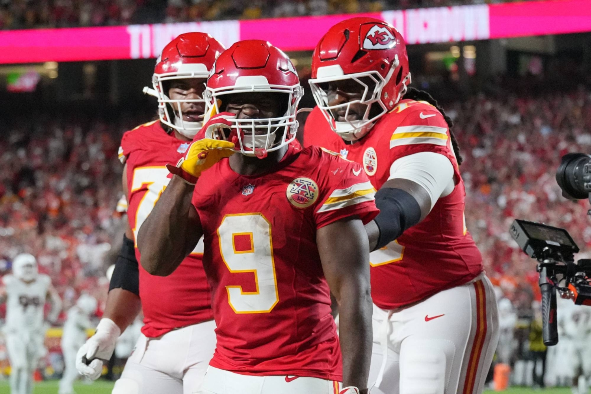
Week One Recap
 Tony
Cee Deez Nuts
Jeanty 32.7 · Swift 32.4
136.16W
Tony
Cee Deez Nuts
Jeanty 32.7 · Swift 32.4
136.16W
 PJ
The Questionables
Dart 26.6 · Etienne 14.8
93.50L
PJ
The Questionables
Dart 26.6 · Etienne 14.8
93.50L
 CJ
Monty’s python Hurts good
Walker 34.1 · Montgomery 28.9
179.52W
CJ
Monty’s python Hurts good
Walker 34.1 · Montgomery 28.9
179.52W
 Seif
Im sorry, Mc-Jackson, ooh
C. Williams 37.26 · Flowers 26.0
109.56L
Seif
Im sorry, Mc-Jackson, ooh
C. Williams 37.26 · Flowers 26.0
109.56L
 Joel
JOELLM
Lawrence 26.1 · Goedert 23.7
147.00W
Joel
JOELLM
Lawrence 26.1 · Goedert 23.7
147.00W
 Andy
Mr. Turna 2-to-uh-Titanic
Jefferson 31.2 · Taylor 25.1
113.62L
Andy
Mr. Turna 2-to-uh-Titanic
Jefferson 31.2 · Taylor 25.1
113.62L
 Kris
Spitters not Quiters
Gibbs 33.6 · JSN 26.2
152.66W
Kris
Spitters not Quiters
Gibbs 33.6 · JSN 26.2
152.66W
 Jake
Egboogadaba
Henry 35.3 · J. Williams 24.2
121.44L
Jake
Egboogadaba
Henry 35.3 · J. Williams 24.2
121.44L
 Neil
JA17’s Hand Me Down Hog
Allen 35.66 · Bijan 31.3
133.96W
Neil
JA17’s Hand Me Down Hog
Allen 35.66 · Bijan 31.3
133.96W
 Pangy
Josh Allen’s New Phat Hog
Burrow 14.16 · Love 13.0
68.06L
Pangy
Josh Allen’s New Phat Hog
Burrow 14.16 · Love 13.0
68.06L
Week One delivered in the most fair of ways — the top five scoring teams won, bottom five lost. Surely that won’t last long, but justice has been served this week but Rodger Goodell and co.
Out the gate, we have our Ch/krises as the bread to our league sandwich, weirdly with two slices of bread atop.
What else? Ahh, Joel’s LLM looks pretty good. Tony’s reaches are paying off thus far. And, it’s hard to ignore Neil’s guy Josh Allen doing insane things.
How did my preseason draft scores/rankings hold up? FUCK YOU, HOW DID YOURS DO?
It’s just one week, but that deserves some overreacting and temperring. Let’s get into it.
Matchup of the Week
0-1
0-1
Focus on the 1-0 teams? Hell no!
The loser of this one will be in a complete free fall, likely to spend the entire next week staring at themselves in the mirror, their families will leave them, and they'll have no choice but to spend every waking hour on fantasy football research, or just give up on this cruel life.
What to watch for: Monday Night Football
This matchup has the Giants Threesome of Skat (Andy), Dart and Nabers (PJ). Hopefully we head into Monday with real stakes on this one.
Elsewehre: Bounce-back games
Andy: Can Drake Maye forget last week’s collapse and bounce back at home against PIT?
PJ: Did the Niners just take it easy on CMC, so he could go nucular at home against the Dolphins?
Waiver Wire
Oh baby, let’s get that sweet sweet FAAB in the pot…
Seif outspends the crowd as Cokeheads unite for Jalen Coker! Five healthy bids, but Seif’s $23 bring home the WR2 for week one.
Vele (15 - Joel) and Caleb Douglas ($2 - Andy), round out the other multi-bid WRs, while Golden fetches $9 from Tony.
Pangy grabs the sexy RB in Kaelon Black ($11), but he pops up on the injury report on Thursday with a groin — damn substation (let’s keep this joke going forever.)
On Thursday, CJ capitalizes on Mason going to the IR, snagging AAAAron Jones for $12 — suprisngly, beating out only one other bid for $1. Are we paying attention, league, or just happy with our backs? (I’m in the latter, but am still thinking I should have bid at least a few bucks.)
Season pickups (24)
Friday, Sep 18
- PJ - GB D/ST (DST) - $1
Thursday, Sep 17
- CJ - Aaron Jones (RB) - $12
Wednesday, Sep 16
- Seif - Jalen Coker (WR) - $23
- Joel - Devaughn Vele (WR) - $15
- Pangy - Kaelon Black (RB) - $11
- Tony - Matthew Golden (WR) - $9
- Seif - Kenyon Sadiq (TE) - $6
- Neil - SF D/ST (DST) - $6
- Jake - Brock Purdy (QB) - $4
- Andy - Caleb Douglas (WR) - $2
- CJ - KC D/ST (DST) - $1
Wed - Sun (Sep 9-Sep 13)
- PJ - Jaxson Dart (QB) - $0
- Jake - Chase McLaughlin (K) - $0
- Seif - Darren Waller (TE) - $1
- Pangy - Tyler Allgeier (RB) - $1
- CJ - T.J. Hockenson (TE) - $1
- Seif - Tyler Loop (K) - $1
Preseason
- Joel - TB D/ST (DST) - $1
- Tony - Jacob Saylors (RB) - $1
- Andy - Woody Marks (RB) - $1
- PJ - Deebo Samuel (WR) - $1
- Pangy - Mike Washington (RB) - $0
- Seif - MarShawn Lloyd (RB) - $4
- CJ - LAC D/ST (DST) - $0
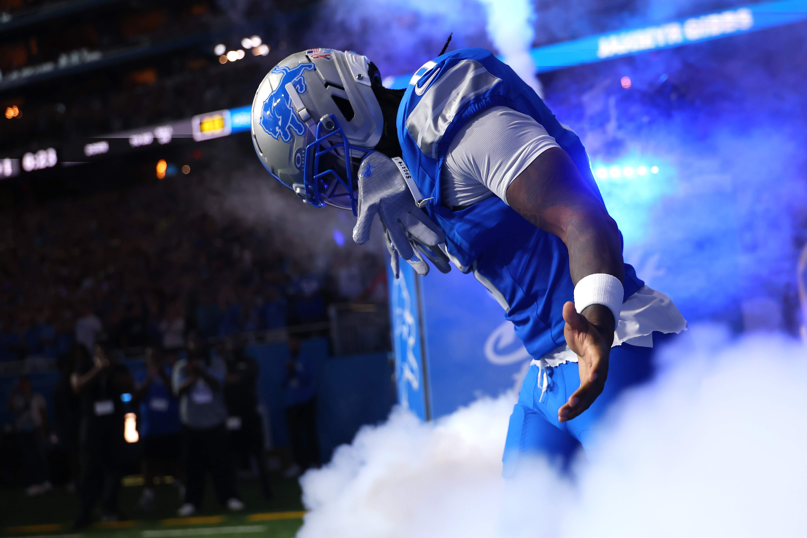
1. Kris — Spitters not Quiters Initial Draft Grade: B-
1-0 W1 PF: 152.66 FAAB: $100
The Champ Returns.
Kris got off to a hot start with JSN picking up where he left off, and continued with #1 pick Gibbs, on his way to a cool 152 points. Second highest in points, but CJ can't snatch the top spot that easily.
TRUTH OR OVERREACTION
Gibbs is the clear number one this year (with the benefit of seeing week two, as well).
TRUTH
The volume and opportunity are insane… oh, and he’s probably the most athletic player in the league.
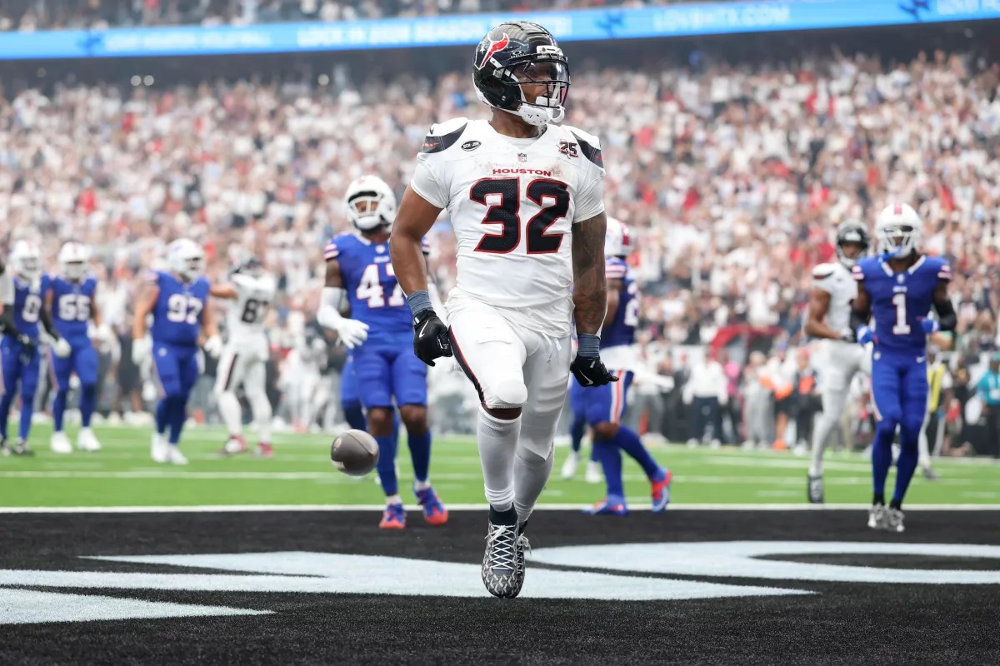
2. CJ — Monty’s python Hurts good Initial Draft Grade: C+
1-0 W1 PF: 179.52 FAAB: $98
Monty delivers big for CJ’s namesake, out the gate with a triple. K9 does with a huge debut in KC. You know it’s a good week when your two WR’s get 28, and they’re afterthoughts (Olave and ARSB).
TRUTH OR OVERREACTION
This is the best RB group in the league. Let’s see if that keeps up for Monty, and see if a team can actually tackle, the next time the Chiefs play.
OVERREACTION
Most fans in here know it is not a good idea to ride K9 like the Chiefs did in week one. Monty can’t play Buffalo every week, but the opportunity is going to be great — Texans needed a finisher.
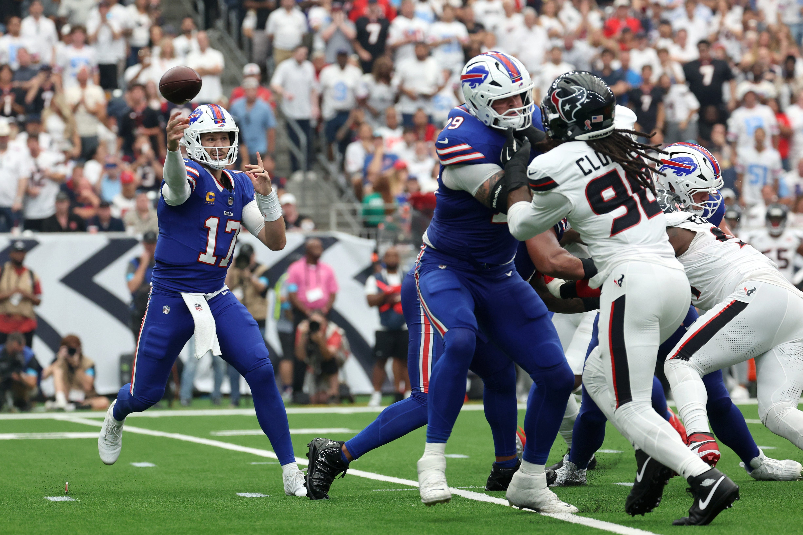
3. Neil — JA17’s Hand Me Down Hog Initial Draft Grade: A
1-0 W1 PF: 133.96 FAAB: $94
Neil drafted Josh Allen. Seems like it was a wise move and could lead to a happiness overdose.
TRUTH OR OVERREACTION
This is it. Neil rides JA (like he does every night in his dreams), and the Bills get it done. They both win their first championship.
OVERREACTION (LOL)
Hmm, where might this go wrong? How bout we just bet on this not working out.
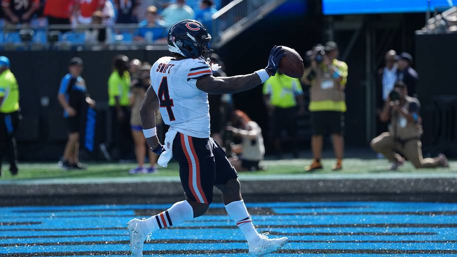
4. Tony — Cee Deez Nuts Initial Draft Grade: B
1-0 W1 PF: 136.16 FAAB: $90
32-bombs from Swift and Jeanty might not happen every week, but I believe either could easily happen either week. Jeanty got it going against the weak ass Dolphins, and Swift had a soft matchup with the Panthers, too, but Jeanty’s volume and Swift’s opportunity could be huge.
Oh, and Likely might be the steal of the draft.
TRUTH OR OVERREACTION
He drafts Golden, he drops him, he gets him back after week one. This was a sneaky pick up and Golden, not Watson, ends up the Packer’s leading scorer this year.
TRUTH
Golden got a ton of targets in the WR2 spot for GB, Kraft clearly needs some time to get right, and we know Watson can’t stay healthy.
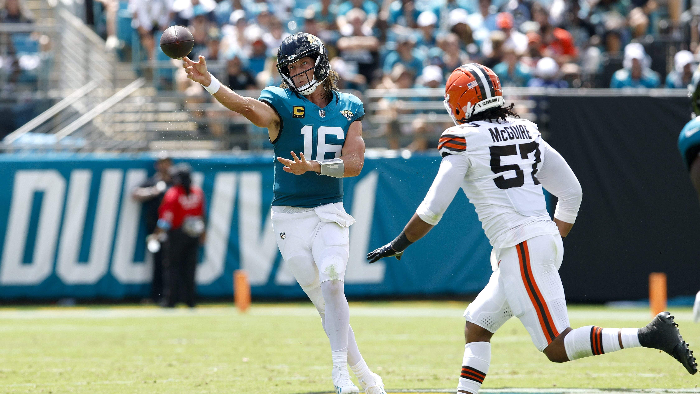
5. Joel — JOELLM Initial Draft Grade: F
1-0 W1 PF: 147.00 FAAB: $84
Joel makes my F draft grade look silly with a week one win. Was nice to see Bucky back to normal, and Goedert hit huge. But it wasn’t all roses — Achane wasn’t himself, and Ladd had a nice game, but left bruised up, in a suprisngly slow start for the Chargers (all McDaniel related, surely).
TRUTH OR OVERREACTION
Trevor Lawrence wins MVP and it’s enough to carry Joel to the playoffs.
OVERREACTION
Lawrence finished last year on fire, and added 4TDs this week. Next week he faces the Broncos, who he carved up on this streak. Hopefully it ends here. (and Joel misses the playoffs slightly.)
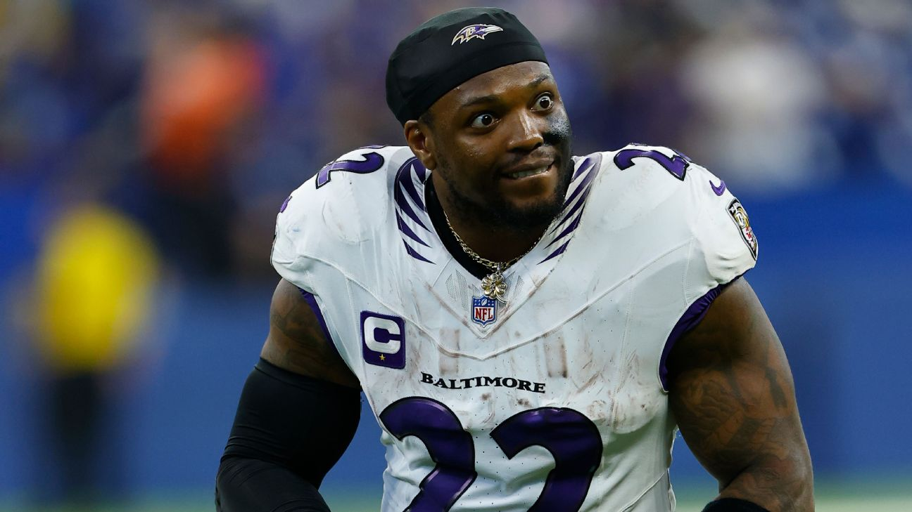
6. Jake — Egboogadaba Initial Draft Grade: A
0-1 L1 PF: 121.44 FAAB: $96
Week One Blues — Horrible Ducks loss. Horrible Broncos loss. Ass kicked by Kris. It’s all uphill from here!
Bright spots with Henry and Javonte. Black holes with most the others.
TRUTH OR OVERREACTION
Henry leads the league in rushing and rushing TDs.
TRUTH
The King is the King for a reason.
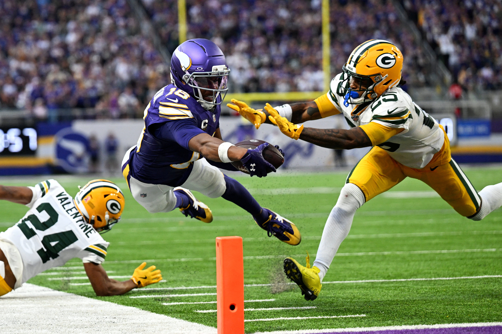
7. Andy — Mr. Turna 2-to-uh-Titanic Initial Draft Grade: C+
0-1 L1 PF: 113.62 FAAB: $97
Flat like the chargers, but both with glimmers of hope. Jefferson had his best game in a year, Skattebo showed he was a worthy keep, even on a pitch count, and JT did JT things.
TRUTH OR OVERREACTION
Drake London in the third round was the worst pick of the draft.
TRUTH
He cost a lot. I don’t even know who this guy starting for the Flacons this week is. And, it doesn’t really get better with Penix or Tua (no, but it does get a bit better if it’s Penix, but still, spendy.)
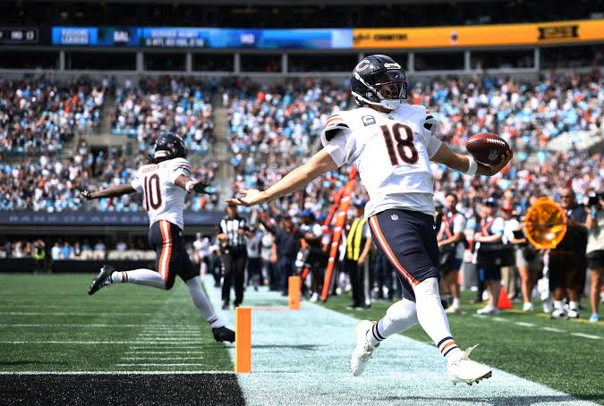
8. Seif — Im sorry, Mc-Jackson, ooh Initial Draft Grade: A+
0-1 L1 PF: 109.56 FAAB: $65
Caleb Williams was amazing and Seif still had a so-so week, even with Flowers big first half (OUT this week). I’m not sure if he knows it, but he is allowed to play a kicker, too.
Injuries are killing Seif already: Bowers, Flowers, Pittman and AJ Brown, with Nacua on the edge (and surely Watson, soon.)
TRUTH OR OVERREACTION
This is the season from hell for Seif. He takes his A+ draft ranking and burns it all to the ground.
TRUTH
How can you ignore this injury luck so far? It ain’t over after a week, but Seif’s gonna have to finesse these next few weeks to have a chance.
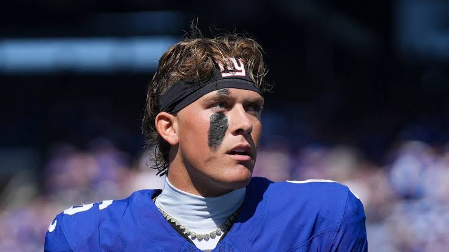
9. PJ — The Questionables Initial Draft Grade: C+
0-1 L1 PF: 93.50 FAAB: $99
Slow out of the gate for most the squad, but there were some encouraging signs with the Dart and Nabers stack looking potentially valuable. Without the late minute add of Dart, this could have been bad.
TRUTH OR OVERREACTION
I’m getting tired, so let’s keep it simple — Brian Thomas is out of the league in two years.
OVERREACTION
He’ll probably be the three or four on another team.
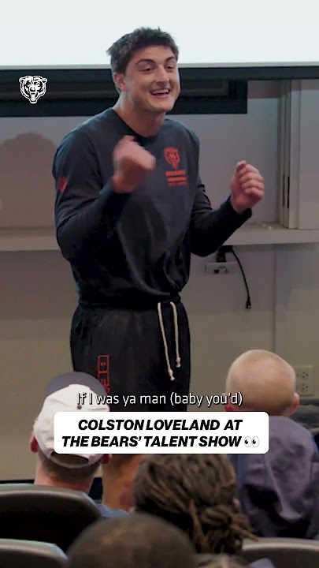
10. Pangy — Josh Allen’s New Phat Hog Initial Draft Grade: A+
0-1 L1 PF: 68.06 FAAB: $88
Oh man, I think this one’s my fault. The A+ draft ranking might be a little off.
TRUTH OR OVERREACTION
OR… this is the outlier week! Burrow, Chase and Tee get going, and Bears can’t help but get Burden and Loveland more involed in their jet fuel offense.
TRUTH
Gotta stick with my guns. Burrow gets stuck with a pain shot in his back and carves up the Texans overrated D this week. Loveland catches at least one pass, too.
Good luck everyone, besides CJ!
- Snake